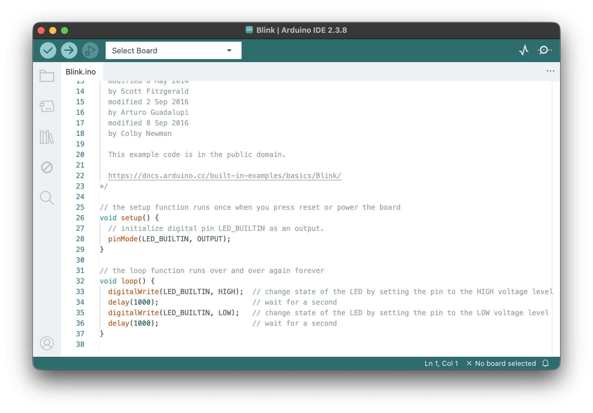
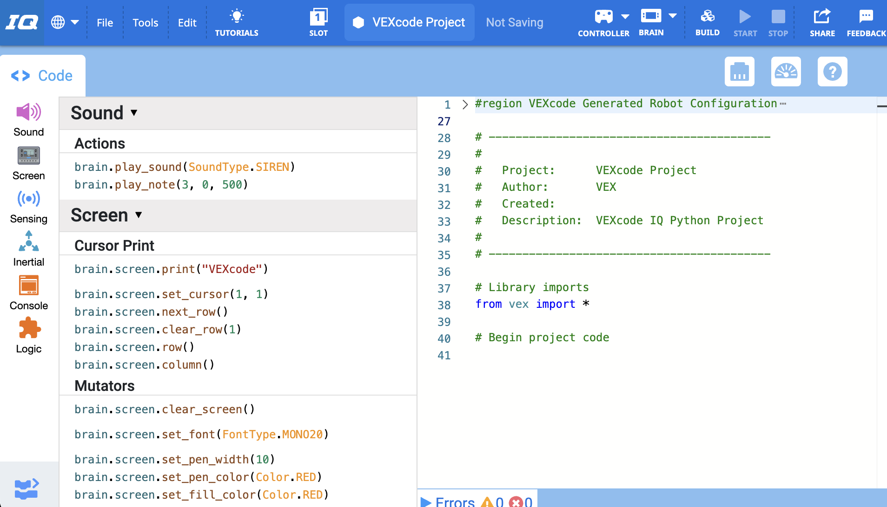

1 Open the project already on screen
2 Find a block — change one number
3 Click Run and watch what changes
4 Try again with a different value!
1 Look at the blinking LED on the board
2 Find delay(1000) in the code
3 Change 1000 to something else (try 200 or 2000)
4 Click Upload — watch the LED!

1 Pick up the tablet and try the app
2 Tap around and explore what it does
3 Ask the senior: "How long did this take?"
1 Look at the code on screen
2 Find the drive distance — change one number
3 Run the program
4 Did the robot do what you expected?

1 The VEX VR site is already open
2 Pick a maze or playground
3 Drag blocks to move the virtual robot
4 Try to get it through the maze!
1 The first lesson is already open
2 Read the short instructions on screen
3 Type the code they show you
4 Press Run — did it work?
CS connects to careers in:
Thank you for helping today. Your job is simple: keep students engaged, help them make one change at your station, and remind them that you started with zero experience too.
Get each student to change one thing and see the result. That's it. They don't need to understand everything — they just need to feel the connection between code and outcome.
Help them find a block with a number and change it. Point out that they didn't type a single line — they just dragged and dropped.
Show them the delay(1000) line. Have them change the number. Upload. Watch the LED.
Let them use the app on the tablet. Tell them a little about what the senior who built it was working on. Emphasize: this was made by a student who started in the same class they're considering.
Have a simple drive program ready. Let them change the drive distance or turn angle, run it, and watch. If the robot does something unexpected, that's perfect — talk about debugging.
Let them try a maze. Keep it low-pressure. If they get stuck, guide them toward adding one more move block rather than solving it for them.
Walk them through the very first lesson. Let them type the code themselves — don't type it for them. If it runs and draws something, they'll remember it.
The message to repeat all morning:
"You do not need to already know how to code. Fundamentals of Computer Science is where everyone starts."